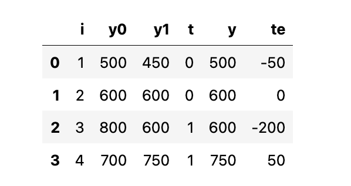
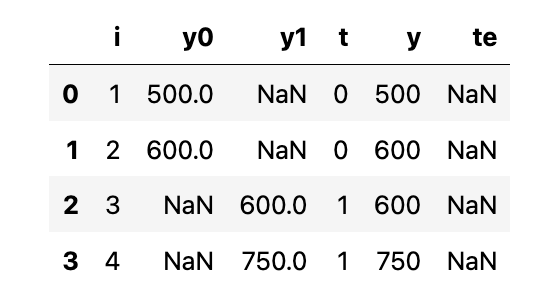
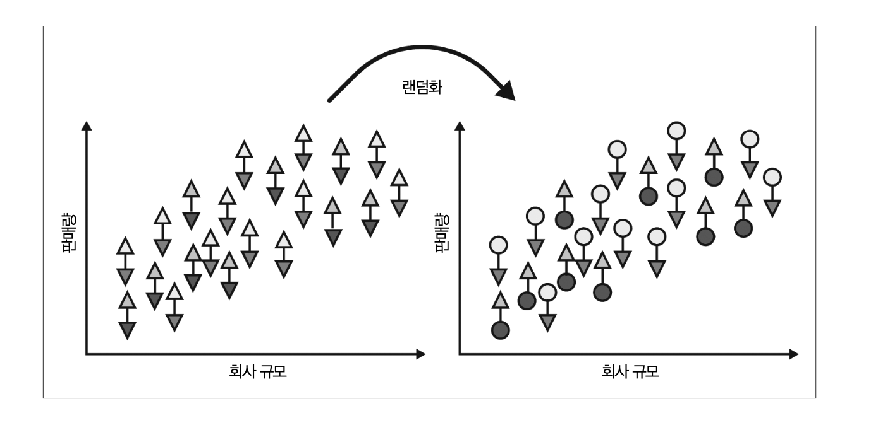
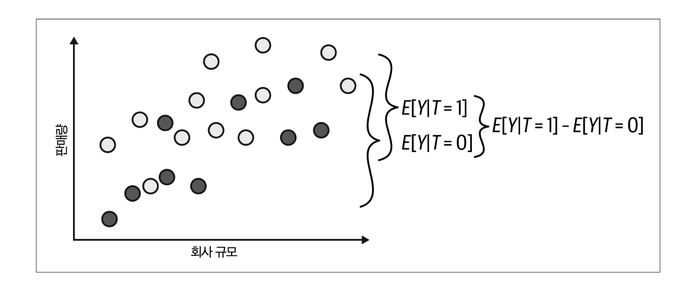
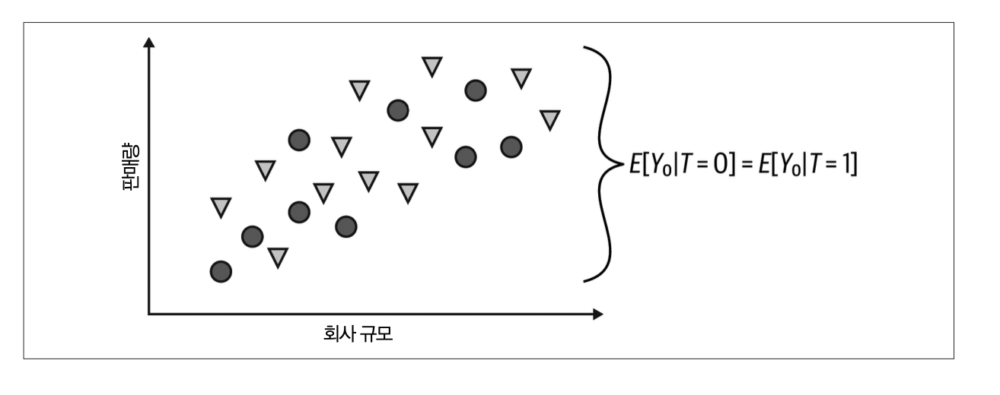

Causal Inference Brave and True 1-2#
우리가 하고 싶은 것#
작성자 : 박상호
우리는 대상에게 어떤 처치를 했을 때 어떤 효과를 나타내는지 알고 싶어 합니다. 예를 들어, 암을 치료하는 신약을 암환자에게 투여했을 때 환자의 생존 기간이 얼마나 늘어날까? 라는 물음을 가지지요. 혹은 1인당 초콜릿 소비량이 국가의 노벨상 수상자 수에 어떤 영향을 미치는지 궁금할 것입니다. 다음은 NEJM(New England Journal of Medicine)이라는 논문에 출판된 그림입니다.

1인당 초콜릿 소비량이 클수록 국가의 노벨상 수상자 수가 커진다고 나타내고 있습니다. 이 논문에서는 아마도 초콜릿 소비가 증가하면 congitive function에 영향을 주어 노벨상 수상자 수가 증가한다고 이야기합니다. 그런데 정말 그렇게 이야기할 수 있을까요? 국가의 GDP나 1인당 소득이 초콜릿 소비량과 노벨상 수상자 수에 모두 영향을 미치지 않았을까요?
우리는 위와 같은 경우를 “연관관계가 있다”고 표현합니다. 하지만 “인과관계”가 있다고 쉽게 이야기하지 못합니다. 그럼 언제 그렇게 이야기할 수 있을까요? 이 물음이 오늘 나눌 이야기의 핵심입니다.
Notation and Calculation#
\(T_i\)는 실험대상 i에 대한 처치여부를 나타냅니다.
\(T_i= \begin{cases} 1 \ \text{: 실험대상 i가 Treatment를 받은 경우}\\\\ 0 \ \text{: 실험대상 i가 Treatment를 받지 않은 경우}\\\\ \end{cases}\)
Unit i에 대해 관찰된 결과 변수(Outcome variable)를 \(Y_i\)라고 정의합니다.
인과적 추론의 근본적인 문제(Fundamental problem of causal inference)는 Treatment가 있든 없든 같은 실험 대상에 대해 동시에 관찰할 수 없다는 것입니다. 이와 관련된 개념이 잠재적 결과(Potential Outcomes)입니다.
\(Y_{0i}\) : 실험대상 i가 Treatment를 받지 않은 잠재적 결과를 의미합니다. \(Y_{1i}\) : 같은 실험대상 i가 Treatment를 받은 잠재적 결과를 의미합니다.
때로는 여러분들이 잠재적 결과를 함수 \(Y_i(t)\)로 보실 수 있는데요, 이 부분을 주의해주세요. \(Y_{0i}\)가 \(Y_i(0)\)로 표기될 수 있고 \(Y_{1i}\)는 \(Y_i(1)\)일 수 있습니다. \(Y_{1i}\)는 태블릿이 있는 교실에 있는 경우 학생 i에 대한 학업 성취도를 나타냅니다. 만약 학생 i가 태블릿을 받았다면, \(Y_{1i}\)를 관찰할 수 있어요. 만약 태블릿을 받지 못한 경우는 \(Y_{0i}\)를 관찰 할 수 있겠죠? 태블릿을 받지 못한 경우, \(Y_{1i}\)가 여전히 정의되어 있지만 우리가 관측할 수 없어요. 이는 반사실적 잠재적 결과입니다.
잠재적 결과를 통해, 개별 처치 효과(ITE, Individual Treatment Effect)를 정의할 수 있게 됩니다.
\(Y_{1i} - Y_{0i}\)
물론, 인과추론의 근본적인 문제로 인해 잠재적 결과 중 하나만 관찰할 수 있습니다. 그렇기 때문에 ITE를 알 수 없습니다. 그래서 당분간은 ITE를 추정하는 것 대신, 추정하기 더 쉬운 평균 처치 효과 (ATE, Average Treatment Effect) 에 대해 알아보도록 해요.
\(ATE = E[Y_1 - Y_0]\)
조금 더 추정하기 쉬운 값은 처치받은 그룹에 대한 평균 처치 효과(ATET/ATT, average treatment effect on the treated) 입니다.
\(ATT = E[Y_1 - Y_0 | T=1]\)
실질적인 계산을 해봅시다. 인과적 추론의 신(Causal inference deity)이 있어서 처치한 결과와 처치하지 않은 결과를 모두 알 수 있다고 해봅시다. 4개의 학교에 대한 데이터를 수집한다면, 학생들에게 태블릿 제공 여부와 연간 학업 시험 점수를 알게 됩니다. 여기에서 학생들에게 태블릿을 제공하는 경우 \(T=1\)이고, \(Y\)는 학업 성취에 대한 시험 점수가 됩니다.

여기서 \(ATE\)는 마지막 컬럼에 대한 평균 즉, 개별 처치 효과(ITE)에 대한 평균입니다.
\(ATE=(-50 + 0 - 200 + 50)/4 = -50\)
ATE를 통해, 태블릿이 학생들의 학업 성취도를 평균적으로 50점 감소시켰음을 의미합니다. 여기서 \(ATT\)는 \(T=1\)일 때 마지막 열의 평균입니다.
\(ATT=(- 200 + 50)/2 = -75\)
태블릿(처치)을 받은 학교는, 태블릿이 학생들의 학업 성취도를 평균적으로 75점 감소시켰다는 것을 의미합니다. 물론, 우리는 해당 결과를 결코 알 수 없습니다 (반사실). 실제로, 우리가 마주한 데이터는 아래와 같습니다.

위 데이터에서는 \(ATE=(600+750)/2 - (500 + 600)/2 = 125\)로 인과 추정량과 크게 차이가 납니다.
Bias#
연관성은 \(E[Y|T=1] - E[Y|T=0]\)로 측정됩니다. 이는 태블릿이 있는 학교의 평균 시험 점수에서 태블릿이 없는 학교의 평균 시험 점수를 뺀 값입니다. 반면 인과관계는 \(E[Y_1 - Y_0]\)로 측정됩니다.
\(E[Y|T=1] - E[Y|T=0] = E[Y_1|T=1] - E[Y_0|T=0]\)
이제, \(E[Y_0|T=1]\)를 더하고 뺍시다. 이 부분은 반사실 결과에 대한 부분입니다. 이는 처치받지 않았다면 처치의 결과가 어떠했을 것인지를 알려줍니다.
\(E[Y|T=1] - E[Y|T=0] = E[Y_1|T=1] - E[Y_0|T=0] + E[Y_0|T=1] - E[Y_0|T=1]\)
마지막으로, 수식을 재정리하고, 기댓값을 합친 이후를 보시죠!
\(E[Y|T=1] - E[Y|T=0] = \underbrace{E[Y_1 - Y_0|T=1]}_{ATT} + \underbrace{\\{ E[Y_0|T=1] - E[Y_0|T=0] \\}}_{BIAS}\)
여기서 \(E[Y|T=1] - E[Y|T=0]\)는 처치군의 효과와 Bias의 합입니다. Bias는 실험군과 대조군이 처치를 받지 않은 경우, 처치 전에 실험군과 대조군이 어떻게 다른지를 나타냅니다. 예시에서 \(E[Y_0|T=0] < E[Y_0|T=1]\)를 보면, 태블릿 제공 여부와 무관 하게 학생들에게 태블릿을 줄 수 있는 학교가 그렇지 않은 학교보다 낫다고 생각할 것입니다.
왜 이런 일이 발생하는 것일까요? 교란변수(Confounding variable)에 대해 나중에 더 이야기 할 예정이지만, 지금은 우리가 통제할 수 없는 많은 변수들이 처치와 함께 바뀌기 때문에 발생하는 편향을 생각할 수 있습니다. 태블릿 제공이 학업 성적 향상에 도움이 된다고 이야기하기 위해서는 태블릿이 있는 학교와 없는 학교가 평균적으로 서로 비슷해야 합니다 (비교가능).
이는 평균적으로 비슷하다면 \(\mathbf{E[Y_0|T=0] = E[Y_0|T=1]}\)으로 나타낼 수 있습니다. 이때, 연관관계는 처치군의 인과관계가 되는 것이지요. 처음 예시에서는 \(E[Y_0|T=0] < E[Y_0|T=1]\)이기 때문에 결과에서 bias가 발생했습니다.
처치된 그룹과 처치되지 않은 그룹이 처치에서만 다른 경우 \(E[Y_1|T=0] = E[Y_1|T=1]\)로도 표현할 수 있습니다. 실험군과 대조군이 모두 처치에 유사하게 반응하는지 확인해야합니다. 이제 처치 전 교환가능(exchangeable, 비교가능)하며, 처치 후에도 실험군과 대조군이 교환 가능해요. 해당 경우는 이렇게 표현될 수 있습니다.
\(E[Y_1 - Y_0|T=1]=E[Y_1 - Y_0|T=0]\)
즉, T에 관계없이 인과효과는 처치군과 대조군에서 동일하므로
\(E[Y|T=1] - E[Y|T=0] = ATT = ATE\)
가 성립하게 됩니다.
실제 인과추론을 하는 방법#
이론적으로 어떠한 경우에 인과관계라고 말할 수 있는지 알게 되었습니다. 그렇지만 의문이 생깁니다. 현실적으로 인과추론을 어떻게 구현할까요? 두 군을 어떻게 하면 비교가능하게 만들 수 있을까요? 이는 무작위실험으로 가능합니다. 처치군과 대조군에 배정되는 메커니즘이 무작위인 경우이죠.
랜덤 분배는 잠재적 결과(potential outcomes)를 처치(treatment)로부터 독립적으로 만듦으로써 편향을 제거합니다.
\((Y_0, Y_1) \perp T\)
잠재적 결과(potential outcomes)가 처치로부터 무관하다는 것은 기대대로라면 처치군(Treatment group; 처치를 받은 그룹)이나 대조군(Control group; 처치를 받지 않은 그룹)에서도 같은 결과가 나와야한다는 것을 의미합니다. 더 간단히 말해보면, 처치군(타겟군)과 대조군은 비교가 가능하다는 것입니다.
다음 그림을 통해 살펴보죠. 첫번째 그림에서는 랜덤화를 하는 상황이고, 두번째 그림은 랜덤화를 하고 나서 두 군의 결과입니다. 세번째 그림은 만약 처치를 받지 않은 \(Y_0\)를 관찰할 수 있다면 두 군의 평균값이 같다는 것을 보여줍니다.


아래 그림에서 각 군은 \(Y_0\)에 대한 평균값이 서로 같습니다.

Summary#
연관관계로부터 인과관계를 알기 위해서는 두 군이 비교가능하여야 합니다. 두 가지 조건이 필요한데, 첫째는 처치를 받지 않았을 때 두 군이 평균적으로 비슷해야 한다는 것이고, 둘째는 두 군 모두 처치에 비슷하게 반응해야 된다는 것입니다.
두 군을 비교가능하게 만드려면 무작위 배정을 하여야 합니다. 무작위 배정을 하게 되면 두 군이 비교가능하게 됩니다. 잠재적 결과와 처치가 독립이 됩니다.
참고문헌 :